import Pkg;Multisite rainfall HMM based SWG (paper)
This tutorial describes the numerical applications described in the paper Interpretable Seasonal Multisite Hidden Markov Model for stochastic rain generation in France by Emmanuel Gobet (CMAP - École Polytechnique), David Métivier (MISTEA – INRAE) and Sylvie Parey (R&D – EDF). It shows a fully reproducible example on how to use the package StochasticWeatherGenerators.jl to reproduce, step-by-step, exactly (almost) all the figures of the paper.
The paper describes the construction of a Stochastic Weather Generator with an Autoregressive Seasonal Hidden Markov Model (SHMM). The SHMM is trained with French weather stations, and the hidden states are interpreted as weather regimes. The model is validated with simulations, especially for its ability to reproduce extreme weather, e.g. droughts. In the paper, the model is also used with Climate Change RCP scenarios (not shown here).
The model fits first a Hidden Markov Model (HMM) with hidden states $Z\in\{1,\ldots,K\}$ and observations the multi-site rain occurrences (dry/wet) $Y = (Y_1, \ldots, Y_D)$ where $D$ is the number of stations.
Then, for each station and hidden state, the distribution of the rainfall amount $R$ is fitted with a mixture of exponential functions. All parameters of the model are smooth functions of the day of the year, which allows to capture seasonality.
Set up
Package and functions
There are several ways to add a package before using, one way is for this tutorial to copy-paste (it might take a while):
import Pkg
Pkg.add(["CSV", "JLD", "DelimitedFiles", "DataFrames", "DataFramesMeta", "StatsBase", "Random", "Distributions", "CairoMakie", "GeoMakie", "NaturalEarth", "LaTeXStrings", "Optimization", "OptimizationOptimJL", "SimpleNonlinearSolve", "ForwardDiff"])using CSV, JLD, DelimitedFiles # File Read/Load/Save
using DataFrames, DataFramesMeta # DataFrames
using Dates
using StatsBase, Random
using DistributionsThe main package is StochasticWeatherGenerators.jl, which provides the interface to the models and data. SmoothPeriodicStatsModels.jl contains the smooth periodic models (fit and sampling methods) used in this tutorial, namely the Seasonal Hidden Markov Model (SHMM), and the seasonal mixture models for rainfall amounts.
using StochasticWeatherGenerators # interface to use with SmoothPeriodicStatsModels.jl
using SmoothPeriodicStatsModels # Name might change. Small collection of smooth periodic models e.g. AR, HMMSince SmoothPeriodicStatsModels.jl v3 all the fitting code lives in a package extension: the models, rand and the likelihoods are always available, while fit_mle and friends are only defined once the SciML solver stack below is loaded: Optimization and SimpleNonlinearSolve are the extension trigger. Every fit then takes its optimization algorithm explicitly as solver, here LBFGS from OptimizationOptimJL.
using Optimization, SimpleNonlinearSolve # load the fitting routines
using OptimizationOptimJL # the optimization algorithm, LBFGS
solver = LBFGS() # every fit below takes its optimization algorithm explicitlyOptim.LBFGS{Nothing, LineSearches.InitialStatic{Float64}, LineSearches.HagerZhang{Float64, Base.RefValue{Bool}}, Returns{Nothing}}(10, LineSearches.InitialStatic{Float64}(1.0, false), LineSearches.HagerZhang{Float64, Base.RefValue{Bool}}(0.1, 0.9, Inf, 5.0, 1.0e-6, 0.6666666666666666, 50, 0.1, 0, Base.RefValue{Bool}(false), nothing, false), nothing, Returns{Nothing}(nothing), Optim.Flat(), true)Random.seed!(1234)TaskLocalRNG()Settings for plotting
Plots are made with Makie.jl and its CairoMakie backend. Loading Makie defines the plot functions of StochasticWeatherGenerators.jl (errorline, errorlinehist, ...). Loading GeoMakie.jl and NaturalEarth.jl as well defines map_with_stations to plot maps.
using CairoMakie, LaTeXStrings
using GeoMakie, NaturalEarth # mapsThe theme sets the LaTeX fonts and the font size of every figure. Each figure is then sized by the width and height of its axes.
plots_colors = [RGBf(0.0, 0.606, 0.979), RGBf(0.889, 0.436, 0.278), RGBf(0.242, 0.643, 0.304), RGBf(0.764, 0.444, 0.824),
RGBf(0.676, 0.556, 0.094), RGBf(0.0, 0.666, 0.681), RGBf(0.931, 0.367, 0.576), RGBf(0.777, 0.51, 0.146)] # Plots.jl default colors which I like better than Makie.jl
set_theme!(theme_latexfonts(); fontsize=16, palette=(color=plots_colors,))
my_palette(K) = plots_colors[my_color.(1:K, K)] # blue for k = 1 (∼wetter) and orange for k = K (∼driest)
month_days = vcat(dayofyear_Leap.(Date.(2000, 1:12)), 366) # x ticks for day of the year plots
month_letters = vcat(string.(first.(monthabbr.(1:12))), "");Global Parameters
The period of the Seasonal HMM is chosen as the number of days in a year. Our choice is 366 however we carefully skip February 29 when needed.
T = 366366Define the French area for map (Longitude and latitude) plot and the precision of the map precision_scale
precision_scale = 50 # meter
LON_min = -5 # West
LON_max = 10 # East
LAT_min = 41 # South
LAT_max = 52 # North52conversion_factor for rainfall amounts RR in 0.1 mm to mm
conversion_factor = 0.1 # 0.1 mm -> mm0.1HMM Hyperparameters
Number of hidden states
K = 4
my_pal = my_palette(K); # just colors I like for plotting weather regime!Degree 𝐃𝐞𝐠 of the trigonometric expansion It could be an array different for each station and variable. Not implemented yet though.
𝐃𝐞𝐠 = 11Local memory order i.e. at station $j$, $\mathbb{P}(Y_n^{(j)} = y_n^{(j)} \mid Z = k, Y_{n-1:n-\texttt{local memory}}^{(j)} = y_{n-1:n-\texttt{local memory}}^{(j)})$
local_order = 11The local_order and/or 𝐃𝐞𝐠 could be a vector/matrix of size D and different for each station, and also different depending on wet or dry past. Not yet implemented.
size_order = 2^local_order
println("K = $K, ", "degree = $𝐃𝐞𝐠, ", "local_order = $local_order")K = 4, degree = 1, local_order = 1Data
Select relevant stations from the station.txt file
Here we
- Remove white space at the right of the
CN, STANAME which is caused by imperfect CVS importation - Select only the stations with 100% valid data for the period
Date(1955,12,31) .≤ :DATE .≤ Date(2019,12,31) - Shorten station names
begin
station_file = Base.download("https://raw.githubusercontent.com/dmetivie/StochasticWeatherGenerators.jl/master/weather_files/stations.txt")
station_all = CSV.read(station_file, DataFrame, header=18, normalizenames=true, ignoreemptyrows=true)
station_all = @chain station_all begin
@transform(:CN = rstrip.(:CN), :STANAME = rstrip.(:STANAME))
# @subset(:CN .∈ tuple(["FR", "BE", "LU", "CH"])) # Choose that if you want to look at all stations in France, Belgium, Luxembourg and Switzerland.
@subset(:STAID .∈ tuple([32, 33, 34, 36, 39, 203, 322, 323, 434, 736, 737, 738, 740, 742, 745, 749, 750, 755, 756, 757, 758, 786, 793, 2192, 2203, 2205, 2207, 2209, 11244, 11245, 11247, 11249]))
@transform(:STANAME = shortname.(:STANAME))
end
end
selected_station_name = ["BOURGES", "TOULOUSE", "MARIGNANE", "LUXEMBOURG", "LILLE", "EMBRUN", "BASTIA", "LA HAGUE", "CHASSIRON", "ORLY"]10-element Vector{String}:
"BOURGES"
"TOULOUSE"
"MARIGNANE"
"LUXEMBOURG"
"LILLE"
"EMBRUN"
"BASTIA"
"LA HAGUE"
"CHASSIRON"
"ORLY"You can change the selected stations. However, keep in mind that for the model to work, the conditional independence hypothesis must hold between stations i.e. $\mathbb{P}(Y_1 = y_1, \cdots, Y_S = y_s\mid Z = k) = \prod_{s=1}^S \mathbb{P}(Y_s = y_s)$. Hence stations must be sufficiently far apart. Check out this MNIST example to see Bernoulli mixtures in action! This assumption is relaxed in this tutorial where a spatial version of the HMM that captures the conditional spatial dependence between stations is used.
station = @subset(station_all, :STANAME .∈ tuple(selected_station_name))
STAID = station.STAID #[32, 33, 39, 203, 737, 755, 758, 793, 11244, 11249];
station_name = station.STANAME10-element Vector{SubString{String}}:
"BOURGES"
"TOULOUSE"
"MARIGNANE"
"LUXEMBOURG"
"LILLE"
"EMBRUN"
"BASTIA"
"LA HAGUE"
"CHASSIRON"
"ORLY"Sort stations (index) by latitude. It is useful for plotting from North to South.
staid_lat = sortperm(station.LAT, rev=true);Station number
D = length(STAID)10Date range
date_start = Date(1956)1956-01-01Date including the previous days used in the initial condition (in case local_memory > 0)
date_start_w_memory = date_start - Day(local_order)
date_end = Date(2020) - Day(1)
every_year = date_start:Day(1):date_end
every_year_w_memory = date_start_w_memory:Day(1):date_end
n2t = dayofyear_Leap.(every_year)
N = length(n2t)23376Treat data
Load into a DataFrame the (ECA) RR files (rain). It filters by date and valid data. It also adds a column :RO for rain occurrences (0: dry, 1: wet).
begin
data_stations = collect_data_ECA.(STAID, date_start_w_memory, date_end, "https://raw.githubusercontent.com/dmetivie/StochasticWeatherGenerators.jl/master/weather_files/ECA_blend_rr/RR_", portion_valid_data=1, skipto=22, header=21, url=true)
for i = eachindex(data_stations)
@transform!(data_stations[i], :RO = onefy.(:RR))
end
endBinary matrix version of the rain event at the D stations.
RR = stack([data_stations[j].RR[1+local_order:end] for j = 1:D]; dims=1) * 0.1 # D × N
Yall = BitMatrix(stack([data_stations[j].RO for j = 1:D]; dims=1)) # D × N, the emission convention
Y_past = BitMatrix(Yall[:, 1:local_order]) # rand(Bool, D, local_order)
ξ = [1; zeros(K - 1)]; # 1 jan 1956 was most likely a type Z = 1 wet day all over France
Y = Yall[:, 1+local_order:end]10×23376 BitMatrix:
1 1 0 0 0 0 1 1 0 1 1 0 0 … 1 1 1 1 1 0 1 1 0 0 0 0
1 1 0 0 0 1 1 1 1 0 0 1 0 1 1 1 1 0 0 0 0 0 0 0 0
1 0 0 0 0 1 1 1 1 0 0 1 1 1 1 0 0 0 0 0 0 0 0 0 0
1 1 0 0 0 0 0 1 1 1 1 1 0 1 1 1 1 1 1 1 1 0 0 0 0
1 1 0 0 0 0 1 1 1 1 0 1 0 1 1 1 1 1 0 1 0 0 1 0 0
1 0 0 0 0 0 0 1 1 1 0 1 1 … 1 1 1 1 0 0 0 0 0 0 0 0
1 1 1 0 0 0 1 0 1 0 0 0 0 1 1 0 0 0 0 0 0 0 0 0 0
1 0 0 0 0 0 1 0 1 1 1 1 1 1 1 1 1 0 1 1 0 0 0 0 0
1 1 0 0 0 0 1 1 1 1 1 0 0 1 1 1 1 0 1 0 0 1 1 1 1
1 0 0 0 0 1 1 1 0 1 1 1 0 1 1 1 1 0 0 1 0 0 0 0 0Map of stations
Convert LAT/LON coordinates from DMS to DD which seems most widely accepted format.
LAT_idx = dms_to_dd.(station.LAT)
LON_idx = dms_to_dd.(station.LON)
long_spell = [longuest_spell(y) for y in eachrow(Y)] # one row per station
FR_map_spell = map_with_stations(LON_idx, LAT_idx, long_spell; station_name=station_name, show_value=true, colorbar_show=true, precision_scale = precision_scale, colorbar_label = "Days")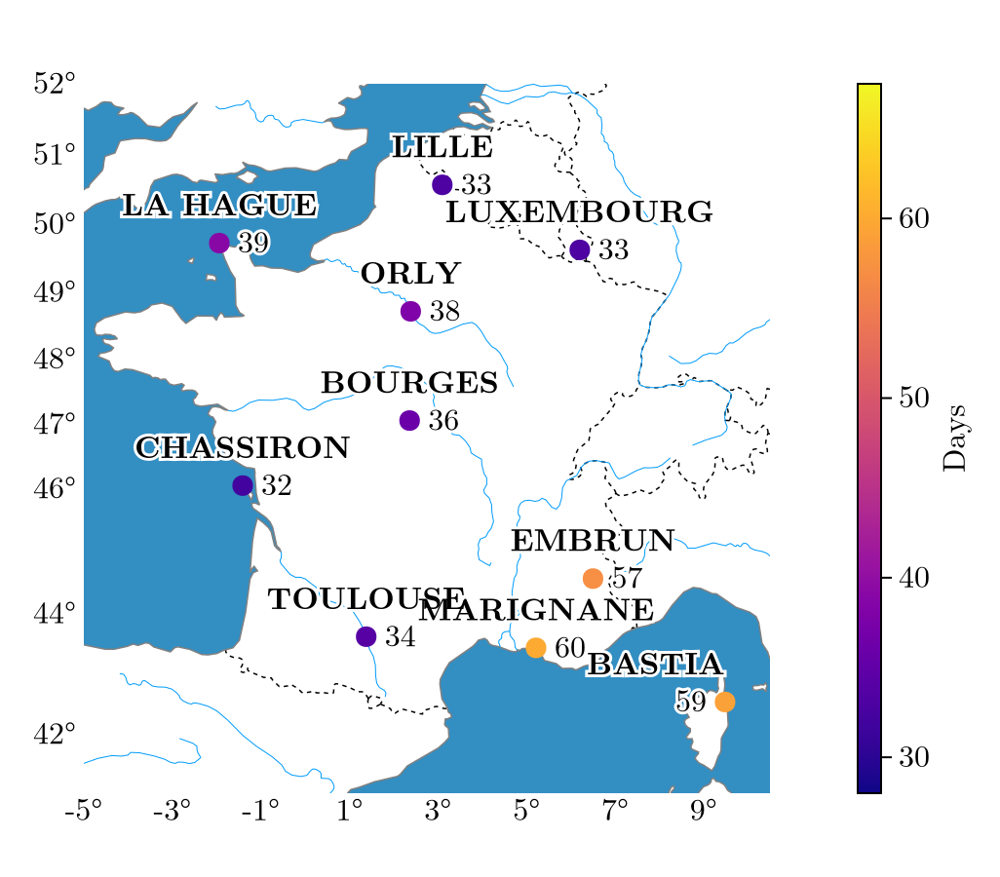
Fit the seasonal HMM
We assume all models e.g. HMM, rain mixture to have parameters evolving smoothly with periodicity $T$ for $t \in [1, T]$. For example a Bernoulli parameter will write
\[p(t) = \dfrac{1}{1 + e^{P(t)}} \in [0, 1],\]
with
\[ P_c(t) = c_0 + \sum_{j=1}^{\texttt{Deg}} \left(c_{2j-1}\cos\left(\dfrac{2\pi}{T}j t\right) + c_{2j}\sin\left(\dfrac{2\pi}{T}j t\right)\right).\]
Fit slice: naive estimation
Before inferring the HMM parameters with the EM (Baum-Welch) algorithm, we do a first naive inference that will be used as initial condition for the EM.
The reference station ref_station is used to sort the hidden states obtained via the slide initialization Here we choose j=1 $\to$ STAID=32 $\to$ BOURGES because it is a central station for France
ref_station = 11This generates a random Periodic HMM that we then fit slice by slice (day by day). See paper.
hmm_random = randARPeriodicHMM(K, T, D, local_order; ξ=ξ, ref_station=ref_station);
@time "FitMLE SHMM (Slice)" hmm_slice = fit_mle_all_slices(hmm_random, Y, Y_past; n2t=n2t, robust=true, rand_ini=true, Dirichlet_α=0.8, history=false, n_random_ini=1, Yₜ_extanted=[-12, -7, 0, 6, 13]);
θᴬ_slice, θᴮ_slice = fit_θ!(hmm_slice, 𝐃𝐞𝐠);FitMLE SHMM (Slice): 47.369096 seconds (165.50 M allocations: 22.012 GiB, 10.06% gc time, 6.80% compilation time)
┌ Warning: nonlinear least squares returned MaxIters
└ @ SmoothPeriodicStatsModelsOptimizationExt ~/.julia/packages/SmoothPeriodicStatsModels/MUUlG/src/fit/solve_interface.jl:64
┌ Warning: nonlinear least squares returned MaxIters
└ @ SmoothPeriodicStatsModelsOptimizationExt ~/.julia/packages/SmoothPeriodicStatsModels/MUUlG/src/fit/solve_interface.jl:64
┌ Warning: nonlinear least squares returned MaxIters
└ @ SmoothPeriodicStatsModelsOptimizationExt ~/.julia/packages/SmoothPeriodicStatsModels/MUUlG/src/fit/solve_interface.jl:64
┌ Warning: nonlinear least squares returned MaxIters
└ @ SmoothPeriodicStatsModelsOptimizationExt ~/.julia/packages/SmoothPeriodicStatsModels/MUUlG/src/fit/solve_interface.jl:64
┌ Warning: nonlinear least squares returned MaxIters
└ @ SmoothPeriodicStatsModelsOptimizationExt ~/.julia/packages/SmoothPeriodicStatsModels/MUUlG/src/fit/solve_interface.jl:64
┌ Warning: nonlinear least squares returned MaxIters
└ @ SmoothPeriodicStatsModelsOptimizationExt ~/.julia/packages/SmoothPeriodicStatsModels/MUUlG/src/fit/solve_interface.jl:64
┌ Warning: nonlinear least squares returned MaxIters
└ @ SmoothPeriodicStatsModelsOptimizationExt ~/.julia/packages/SmoothPeriodicStatsModels/MUUlG/src/fit/solve_interface.jl:64
┌ Warning: nonlinear least squares returned MaxIters
└ @ SmoothPeriodicStatsModelsOptimizationExt ~/.julia/packages/SmoothPeriodicStatsModels/MUUlG/src/fit/solve_interface.jl:64
┌ Warning: nonlinear least squares returned MaxIters
└ @ SmoothPeriodicStatsModelsOptimizationExt ~/.julia/packages/SmoothPeriodicStatsModels/MUUlG/src/fit/solve_interface.jl:64
┌ Warning: nonlinear least squares returned MaxIters
└ @ SmoothPeriodicStatsModelsOptimizationExt ~/.julia/packages/SmoothPeriodicStatsModels/MUUlG/src/fit/solve_interface.jl:64
┌ Warning: nonlinear least squares returned MaxIters
└ @ SmoothPeriodicStatsModelsOptimizationExt ~/.julia/packages/SmoothPeriodicStatsModels/MUUlG/src/fit/solve_interface.jl:64
┌ Warning: nonlinear least squares returned MaxIters
└ @ SmoothPeriodicStatsModelsOptimizationExt ~/.julia/packages/SmoothPeriodicStatsModels/MUUlG/src/fit/solve_interface.jl:64
┌ Warning: nonlinear least squares returned MaxIters
└ @ SmoothPeriodicStatsModelsOptimizationExt ~/.julia/packages/SmoothPeriodicStatsModels/MUUlG/src/fit/solve_interface.jl:64
┌ Warning: nonlinear least squares returned MaxIters
└ @ SmoothPeriodicStatsModelsOptimizationExt ~/.julia/packages/SmoothPeriodicStatsModels/MUUlG/src/fit/solve_interface.jl:64
┌ Warning: nonlinear least squares returned MaxIters
└ @ SmoothPeriodicStatsModelsOptimizationExt ~/.julia/packages/SmoothPeriodicStatsModels/MUUlG/src/fit/solve_interface.jl:64
┌ Warning: nonlinear least squares returned MaxIters
└ @ SmoothPeriodicStatsModelsOptimizationExt ~/.julia/packages/SmoothPeriodicStatsModels/MUUlG/src/fit/solve_interface.jl:64
┌ Warning: nonlinear least squares returned MaxIters
└ @ SmoothPeriodicStatsModelsOptimizationExt ~/.julia/packages/SmoothPeriodicStatsModels/MUUlG/src/fit/solve_interface.jl:64
┌ Warning: nonlinear least squares returned MaxIters
└ @ SmoothPeriodicStatsModelsOptimizationExt ~/.julia/packages/SmoothPeriodicStatsModels/MUUlG/src/fit/solve_interface.jl:64
┌ Warning: nonlinear least squares returned MaxIters
└ @ SmoothPeriodicStatsModelsOptimizationExt ~/.julia/packages/SmoothPeriodicStatsModels/MUUlG/src/fit/solve_interface.jl:64
┌ Warning: nonlinear least squares returned MaxIters
└ @ SmoothPeriodicStatsModelsOptimizationExt ~/.julia/packages/SmoothPeriodicStatsModels/MUUlG/src/fit/solve_interface.jl:64
┌ Warning: nonlinear least squares returned MaxIters
└ @ SmoothPeriodicStatsModelsOptimizationExt ~/.julia/packages/SmoothPeriodicStatsModels/MUUlG/src/fit/solve_interface.jl:64
┌ Warning: nonlinear least squares returned MaxIters
└ @ SmoothPeriodicStatsModelsOptimizationExt ~/.julia/packages/SmoothPeriodicStatsModels/MUUlG/src/fit/solve_interface.jl:64
┌ Warning: nonlinear least squares returned MaxIters
└ @ SmoothPeriodicStatsModelsOptimizationExt ~/.julia/packages/SmoothPeriodicStatsModels/MUUlG/src/fit/solve_interface.jl:64
┌ Warning: nonlinear least squares returned MaxIters
└ @ SmoothPeriodicStatsModelsOptimizationExt ~/.julia/packages/SmoothPeriodicStatsModels/MUUlG/src/fit/solve_interface.jl:64
┌ Warning: nonlinear least squares returned MaxIters
└ @ SmoothPeriodicStatsModelsOptimizationExt ~/.julia/packages/SmoothPeriodicStatsModels/MUUlG/src/fit/solve_interface.jl:64
┌ Warning: nonlinear least squares returned MaxIters
└ @ SmoothPeriodicStatsModelsOptimizationExt ~/.julia/packages/SmoothPeriodicStatsModels/MUUlG/src/fit/solve_interface.jl:64
┌ Warning: nonlinear least squares returned MaxIters
└ @ SmoothPeriodicStatsModelsOptimizationExt ~/.julia/packages/SmoothPeriodicStatsModels/MUUlG/src/fit/solve_interface.jl:64
┌ Warning: nonlinear least squares returned MaxIters
└ @ SmoothPeriodicStatsModelsOptimizationExt ~/.julia/packages/SmoothPeriodicStatsModels/MUUlG/src/fit/solve_interface.jl:64
┌ Warning: nonlinear least squares returned MaxIters
└ @ SmoothPeriodicStatsModelsOptimizationExt ~/.julia/packages/SmoothPeriodicStatsModels/MUUlG/src/fit/solve_interface.jl:64
┌ Warning: nonlinear least squares returned MaxIters
└ @ SmoothPeriodicStatsModelsOptimizationExt ~/.julia/packages/SmoothPeriodicStatsModels/MUUlG/src/fit/solve_interface.jl:64
┌ Warning: nonlinear least squares returned MaxIters
└ @ SmoothPeriodicStatsModelsOptimizationExt ~/.julia/packages/SmoothPeriodicStatsModels/MUUlG/src/fit/solve_interface.jl:64
┌ Warning: nonlinear least squares returned MaxIters
└ @ SmoothPeriodicStatsModelsOptimizationExt ~/.julia/packages/SmoothPeriodicStatsModels/MUUlG/src/fit/solve_interface.jl:64
┌ Warning: nonlinear least squares returned MaxIters
└ @ SmoothPeriodicStatsModelsOptimizationExt ~/.julia/packages/SmoothPeriodicStatsModels/MUUlG/src/fit/solve_interface.jl:64
┌ Warning: nonlinear least squares returned MaxIters
└ @ SmoothPeriodicStatsModelsOptimizationExt ~/.julia/packages/SmoothPeriodicStatsModels/MUUlG/src/fit/solve_interface.jl:64
┌ Warning: nonlinear least squares returned MaxIters
└ @ SmoothPeriodicStatsModelsOptimizationExt ~/.julia/packages/SmoothPeriodicStatsModels/MUUlG/src/fit/solve_interface.jl:64
┌ Warning: nonlinear least squares returned MaxIters
└ @ SmoothPeriodicStatsModelsOptimizationExt ~/.julia/packages/SmoothPeriodicStatsModels/MUUlG/src/fit/solve_interface.jl:64
┌ Warning: nonlinear least squares returned MaxIters
└ @ SmoothPeriodicStatsModelsOptimizationExt ~/.julia/packages/SmoothPeriodicStatsModels/MUUlG/src/fit/solve_interface.jl:64
┌ Warning: nonlinear least squares returned MaxIters
└ @ SmoothPeriodicStatsModelsOptimizationExt ~/.julia/packages/SmoothPeriodicStatsModels/MUUlG/src/fit/solve_interface.jl:64
┌ Warning: nonlinear least squares returned MaxIters
└ @ SmoothPeriodicStatsModelsOptimizationExt ~/.julia/packages/SmoothPeriodicStatsModels/MUUlG/src/fit/solve_interface.jl:64
┌ Warning: nonlinear least squares returned MaxIters
└ @ SmoothPeriodicStatsModelsOptimizationExt ~/.julia/packages/SmoothPeriodicStatsModels/MUUlG/src/fit/solve_interface.jl:64
┌ Warning: nonlinear least squares returned MaxIters
└ @ SmoothPeriodicStatsModelsOptimizationExt ~/.julia/packages/SmoothPeriodicStatsModels/MUUlG/src/fit/solve_interface.jl:64
┌ Warning: nonlinear least squares returned MaxIters
└ @ SmoothPeriodicStatsModelsOptimizationExt ~/.julia/packages/SmoothPeriodicStatsModels/MUUlG/src/fit/solve_interface.jl:64
┌ Warning: nonlinear least squares returned MaxIters
└ @ SmoothPeriodicStatsModelsOptimizationExt ~/.julia/packages/SmoothPeriodicStatsModels/MUUlG/src/fit/solve_interface.jl:64
┌ Warning: nonlinear least squares returned MaxIters
└ @ SmoothPeriodicStatsModelsOptimizationExt ~/.julia/packages/SmoothPeriodicStatsModels/MUUlG/src/fit/solve_interface.jl:64
┌ Warning: nonlinear least squares returned MaxIters
└ @ SmoothPeriodicStatsModelsOptimizationExt ~/.julia/packages/SmoothPeriodicStatsModels/MUUlG/src/fit/solve_interface.jl:64
┌ Warning: nonlinear least squares returned MaxIters
└ @ SmoothPeriodicStatsModelsOptimizationExt ~/.julia/packages/SmoothPeriodicStatsModels/MUUlG/src/fit/solve_interface.jl:64
┌ Warning: nonlinear least squares returned MaxIters
└ @ SmoothPeriodicStatsModelsOptimizationExt ~/.julia/packages/SmoothPeriodicStatsModels/MUUlG/src/fit/solve_interface.jl:64
┌ Warning: nonlinear least squares returned MaxIters
└ @ SmoothPeriodicStatsModelsOptimizationExt ~/.julia/packages/SmoothPeriodicStatsModels/MUUlG/src/fit/solve_interface.jl:64
┌ Warning: nonlinear least squares returned MaxIters
└ @ SmoothPeriodicStatsModelsOptimizationExt ~/.julia/packages/SmoothPeriodicStatsModels/MUUlG/src/fit/solve_interface.jl:64
┌ Warning: nonlinear least squares returned MaxIters
└ @ SmoothPeriodicStatsModelsOptimizationExt ~/.julia/packages/SmoothPeriodicStatsModels/MUUlG/src/fit/solve_interface.jl:64
┌ Warning: nonlinear least squares returned MaxIters
└ @ SmoothPeriodicStatsModelsOptimizationExt ~/.julia/packages/SmoothPeriodicStatsModels/MUUlG/src/fit/solve_interface.jl:64
┌ Warning: nonlinear least squares returned MaxIters
└ @ SmoothPeriodicStatsModelsOptimizationExt ~/.julia/packages/SmoothPeriodicStatsModels/MUUlG/src/fit/solve_interface.jl:64
┌ Warning: nonlinear least squares returned MaxIters
└ @ SmoothPeriodicStatsModelsOptimizationExt ~/.julia/packages/SmoothPeriodicStatsModels/MUUlG/src/fit/solve_interface.jl:64
┌ Warning: nonlinear least squares returned MaxIters
└ @ SmoothPeriodicStatsModelsOptimizationExt ~/.julia/packages/SmoothPeriodicStatsModels/MUUlG/src/fit/solve_interface.jl:64
┌ Warning: nonlinear least squares returned MaxIters
└ @ SmoothPeriodicStatsModelsOptimizationExt ~/.julia/packages/SmoothPeriodicStatsModels/MUUlG/src/fit/solve_interface.jl:64
┌ Warning: nonlinear least squares returned MaxIters
└ @ SmoothPeriodicStatsModelsOptimizationExt ~/.julia/packages/SmoothPeriodicStatsModels/MUUlG/src/fit/solve_interface.jl:64
┌ Warning: nonlinear least squares returned MaxIters
└ @ SmoothPeriodicStatsModelsOptimizationExt ~/.julia/packages/SmoothPeriodicStatsModels/MUUlG/src/fit/solve_interface.jl:64
┌ Warning: nonlinear least squares returned MaxIters
└ @ SmoothPeriodicStatsModelsOptimizationExt ~/.julia/packages/SmoothPeriodicStatsModels/MUUlG/src/fit/solve_interface.jl:64
┌ Warning: nonlinear least squares returned MaxIters
└ @ SmoothPeriodicStatsModelsOptimizationExt ~/.julia/packages/SmoothPeriodicStatsModels/MUUlG/src/fit/solve_interface.jl:64
┌ Warning: nonlinear least squares returned MaxIters
└ @ SmoothPeriodicStatsModelsOptimizationExt ~/.julia/packages/SmoothPeriodicStatsModels/MUUlG/src/fit/solve_interface.jl:64
┌ Warning: nonlinear least squares returned MaxIters
└ @ SmoothPeriodicStatsModelsOptimizationExt ~/.julia/packages/SmoothPeriodicStatsModels/MUUlG/src/fit/solve_interface.jl:64
┌ Warning: nonlinear least squares returned MaxIters
└ @ SmoothPeriodicStatsModelsOptimizationExt ~/.julia/packages/SmoothPeriodicStatsModels/MUUlG/src/fit/solve_interface.jl:64
┌ Warning: nonlinear least squares returned MaxIters
└ @ SmoothPeriodicStatsModelsOptimizationExt ~/.julia/packages/SmoothPeriodicStatsModels/MUUlG/src/fit/solve_interface.jl:64
┌ Warning: nonlinear least squares returned MaxIters
└ @ SmoothPeriodicStatsModelsOptimizationExt ~/.julia/packages/SmoothPeriodicStatsModels/MUUlG/src/fit/solve_interface.jl:64
┌ Warning: nonlinear least squares returned MaxIters
└ @ SmoothPeriodicStatsModelsOptimizationExt ~/.julia/packages/SmoothPeriodicStatsModels/MUUlG/src/fit/solve_interface.jl:64
┌ Warning: nonlinear least squares returned MaxIters
└ @ SmoothPeriodicStatsModelsOptimizationExt ~/.julia/packages/SmoothPeriodicStatsModels/MUUlG/src/fit/solve_interface.jl:64
┌ Warning: nonlinear least squares returned MaxIters
└ @ SmoothPeriodicStatsModelsOptimizationExt ~/.julia/packages/SmoothPeriodicStatsModels/MUUlG/src/fit/solve_interface.jl:64
┌ Warning: nonlinear least squares returned MaxIters
└ @ SmoothPeriodicStatsModelsOptimizationExt ~/.julia/packages/SmoothPeriodicStatsModels/MUUlG/src/fit/solve_interface.jl:64
┌ Warning: nonlinear least squares returned MaxIters
└ @ SmoothPeriodicStatsModelsOptimizationExt ~/.julia/packages/SmoothPeriodicStatsModels/MUUlG/src/fit/solve_interface.jl:64
┌ Warning: nonlinear least squares returned MaxIters
└ @ SmoothPeriodicStatsModelsOptimizationExt ~/.julia/packages/SmoothPeriodicStatsModels/MUUlG/src/fit/solve_interface.jl:64
┌ Warning: nonlinear least squares returned MaxIters
└ @ SmoothPeriodicStatsModelsOptimizationExt ~/.julia/packages/SmoothPeriodicStatsModels/MUUlG/src/fit/solve_interface.jl:64
┌ Warning: nonlinear least squares returned MaxIters
└ @ SmoothPeriodicStatsModelsOptimizationExt ~/.julia/packages/SmoothPeriodicStatsModels/MUUlG/src/fit/solve_interface.jl:64
┌ Warning: nonlinear least squares returned MaxIters
└ @ SmoothPeriodicStatsModelsOptimizationExt ~/.julia/packages/SmoothPeriodicStatsModels/MUUlG/src/fit/solve_interface.jl:64
┌ Warning: nonlinear least squares returned MaxIters
└ @ SmoothPeriodicStatsModelsOptimizationExt ~/.julia/packages/SmoothPeriodicStatsModels/MUUlG/src/fit/solve_interface.jl:64
┌ Warning: nonlinear least squares returned MaxIters
└ @ SmoothPeriodicStatsModelsOptimizationExt ~/.julia/packages/SmoothPeriodicStatsModels/MUUlG/src/fit/solve_interface.jl:64
┌ Warning: nonlinear least squares returned MaxIters
└ @ SmoothPeriodicStatsModelsOptimizationExt ~/.julia/packages/SmoothPeriodicStatsModels/MUUlG/src/fit/solve_interface.jl:64
┌ Warning: nonlinear least squares returned MaxIters
└ @ SmoothPeriodicStatsModelsOptimizationExt ~/.julia/packages/SmoothPeriodicStatsModels/MUUlG/src/fit/solve_interface.jl:64
┌ Warning: nonlinear least squares returned MaxIters
└ @ SmoothPeriodicStatsModelsOptimizationExt ~/.julia/packages/SmoothPeriodicStatsModels/MUUlG/src/fit/solve_interface.jl:64
┌ Warning: nonlinear least squares returned MaxIters
└ @ SmoothPeriodicStatsModelsOptimizationExt ~/.julia/packages/SmoothPeriodicStatsModels/MUUlG/src/fit/solve_interface.jl:64
┌ Warning: nonlinear least squares returned MaxIters
└ @ SmoothPeriodicStatsModelsOptimizationExt ~/.julia/packages/SmoothPeriodicStatsModels/MUUlG/src/fit/solve_interface.jl:64
┌ Warning: nonlinear least squares returned MaxIters
└ @ SmoothPeriodicStatsModelsOptimizationExt ~/.julia/packages/SmoothPeriodicStatsModels/MUUlG/src/fit/solve_interface.jl:64
┌ Warning: nonlinear least squares returned MaxIters
└ @ SmoothPeriodicStatsModelsOptimizationExt ~/.julia/packages/SmoothPeriodicStatsModels/MUUlG/src/fit/solve_interface.jl:64
┌ Warning: nonlinear least squares returned MaxIters
└ @ SmoothPeriodicStatsModelsOptimizationExt ~/.julia/packages/SmoothPeriodicStatsModels/MUUlG/src/fit/solve_interface.jl:64
┌ Warning: nonlinear least squares returned MaxIters
└ @ SmoothPeriodicStatsModelsOptimizationExt ~/.julia/packages/SmoothPeriodicStatsModels/MUUlG/src/fit/solve_interface.jl:64Fit with Baum Welch using the slice estimate as a starting point
With the Slice estimate as a good starting point for the full (seasonal) Baum Welch EM algorithm we fit the model!
Each M-step solves one independent problem per hidden state, site and memory. They are run as a SciML EnsembleProblem, so parallelism is selected with the ensemble keyword rather than by adding workers behind the scene. To accelerate the fitting procedure (especially for larger models or when testing various model hyperparameters), start Julia with julia -t auto and pass
fit_mle(...; ensemble=EnsembleThreads())or, to distribute over several processes,
using Distributed
addprocs(10) # number of worker to add
@everywhere using SmoothPeriodicStatsModels, Optimization, OptimizationOptimJL, SimpleNonlinearSolve, ForwardDiff # load the pkg *and* the extension trigger on each worker
fit_mle(...; ensemble=EnsembleDistributed())See the official Julia doc for more info. On smaller models it does not worth it since adding workers add some compilation and communication time.
hmm_guess = SmoothARPeriodicHMM(hmm_slice.a, θᴬ_slice, θᴮ_slice, T)
@time "FitMLE SHMM (Baum Welch)" hmm_fit_smooth, hist = fit_mle(hmm_guess, Y, Y_past; solver, maxiter=10000, robust=true, display=:iter, tol=1e-3, ps_iters=true, n2t=n2t);Iteration 0: logtot = -121732.57382288757
Iteration 1: logtot = -119742.535944
Iteration 2: logtot = -118622.694466
Iteration 3: logtot = -117867.959798
Iteration 4: logtot = -117500.813374
Iteration 5: logtot = -117335.457056
Iteration 6: logtot = -117253.69297
Iteration 7: logtot = -117209.64697
Iteration 8: logtot = -117184.521995
Iteration 9: logtot = -117169.509731
Iteration 10: logtot = -117160.153764
Iteration 11: logtot = -117154.086062
Iteration 12: logtot = -117149.998427
Iteration 13: logtot = -117147.12042
Iteration 14: logtot = -117140.013588
Iteration 15: logtot = -117134.661313
Iteration 16: logtot = -117133.442218
Iteration 17: logtot = -117132.493142
Iteration 18: logtot = -117131.734275
Iteration 19: logtot = -117131.117569
Iteration 20: logtot = -117130.609988
Iteration 21: logtot = -117130.187987
Iteration 22: logtot = -117129.834292
Iteration 23: logtot = -117129.535917
Iteration 24: logtot = -117129.282886
Iteration 25: logtot = -117129.067397
Iteration 26: logtot = -117128.883248
Iteration 27: logtot = -117128.72544
Iteration 28: logtot = -117128.589896
Iteration 29: logtot = -117128.473256
Iteration 30: logtot = -117128.37273
Iteration 31: logtot = -117128.28598
Iteration 32: logtot = -117128.211041
Iteration 33: logtot = -117128.146248
Iteration 34: logtot = -117128.090185
Iteration 35: logtot = -117128.041645
Iteration 36: logtot = -117127.999598
Iteration 37: logtot = -117127.963158
Iteration 38: logtot = -117127.931564
Iteration 39: logtot = -117127.904164
Iteration 40: logtot = -117127.880393
Iteration 41: logtot = -117127.859765
Iteration 42: logtot = -117127.841859
Iteration 43: logtot = -117127.826315
Iteration 44: logtot = -117127.812816
Iteration 45: logtot = -117127.801093
Iteration 46: logtot = -117127.790909
Iteration 47: logtot = -117127.782061
Iteration 48: logtot = -117127.774373
Iteration 49: logtot = -117127.767692
Iteration 50: logtot = -117127.761884
Iteration 51: logtot = -117127.756836
Iteration 52: logtot = -117127.752447
Iteration 53: logtot = -117127.74863
Iteration 54: logtot = -117127.745311
Iteration 55: logtot = -117127.742424
Iteration 56: logtot = -117127.739913
Iteration 57: logtot = -117127.737729
Iteration 58: logtot = -117127.735828
Iteration 59: logtot = -117127.734174
Iteration 60: logtot = -117127.732734
Iteration 61: logtot = -117127.731482
Iteration 62: logtot = -117127.730391
Iteration 63: logtot = -117127.729442
EM converged in 63 iterations, logtot = -117127.72944152873
FitMLE SHMM (Baum Welch): 38.110777 seconds (17.14 M allocations: 5.925 GiB, 0.92% gc time, 20.64% compilation time)Since v4 the model carries its own coefficients, so Baum-Welch returns (model, history) like every other fit: θq_fit and θy_fit are read off the fitted model rather than returned beside it, and the θ_iters trajectory is hist.ps_iters.
hmm_fit = ARPeriodicHMM(hmm_fit_smooth) # the evaluated twin, to plot and simulate from
θq_fit = copy(parameters(hmm_fit_smooth).A) # `copy`: a block of the parameters is a view, which JLD cannot read back
θy_fit = copy(parameters(hmm_fit_smooth).B);The loop itself is HiddenMarkovModels.jl's: a periodic HMM is a controlled HMM whose control is the day of the year, so the forward and backward passes come from there and this package supplies only the M-step.
The solver used by every M-step is the solver keyword, required, and its own options go through solve_kwargs, e.g. fit_mle(...; solver=NewtonTrustRegion(), solve_kwargs=(maxiters=200,)). The v2 keywords silence and warm_start were Ipopt/JuMP concepts and are gone: solver verbosity is a solve_kwargs entry, and every M-step now starts from the previous iterate unconditionally.
Run the following code to load a saved hmm
hmm_infos = load(joinpath(save_tuto_path,"hmm_fit_K_$(K)_d_$(𝐃𝐞𝐠)_m_$(local_order).jld"))
hmm_fit = hmm_infos["hmm"]
θq_fit = hmm_infos["Q_param"]
θy_fit = hmm_infos["Y_param"]Visualization of the HMM parameters
Transition matrix
begin
pallA = Figure()
for k in 1:K
row, col = fldmod1(k, 2)
ax = Axis(pallA[row, col], limits=(0, 367, 0, 1), xticks=(month_days, month_letters), width=400, height=200)
col > 1 && hideydecorations!(ax, grid=false, ticks=false)
for l in 1:K
lines!(ax, 1:T, hmm_fit.A[k, l, :], color=my_palette(K)[l], linewidth=1.75, label=L"Q_{%$(k)\to %$(l)}")
end
hlines!(ax, 0.5, color=:black, linestyle=:dot)
axislegend(ax, position=:ct, nbanks=K, framevisible=false, colgap=6, patchlabelgap=2)
end
resize_to_layout!(pallA)
pallA
end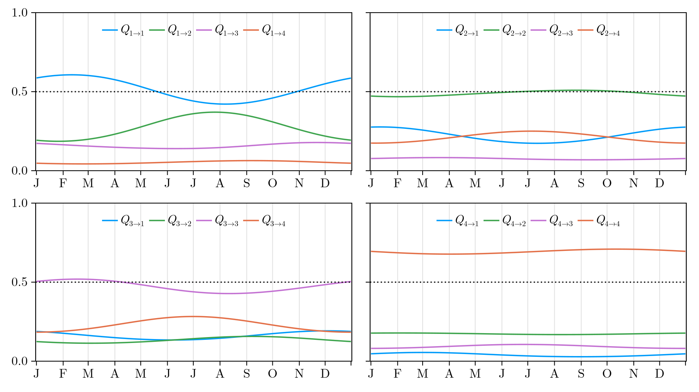
Rain probabilities
begin
mm = 1
pallB = Figure()
for (idx, j) in enumerate(staid_lat)
row, col = fldmod1(idx, 5)
ax = Axis(pallB[row, col], title=station_name[j], limits=(0, 367, 0, 1), xticks=(month_days, month_letters), width=230, height=170)
col > 1 && hideydecorations!(ax, grid=false, ticks=false)
for k in 1:K
lines!(ax, 1:T, succprob.(hmm_fit.B[k, :, j, mm]), color=my_palette(K)[k], linewidth=2)
end
hlines!(ax, 0.5, color=:black, linestyle=:dot)
end
Legend(pallB[:, 6], [LineElement(color=my_palette(K)[k], linewidth=2) for k in 1:K],
[L"\mathbb{P}(Y = \textrm{wet}\mid Z = %$k, H = \textrm{dry})" for k in 1:K], framevisible=false)
resize_to_layout!(pallB)
pallB
end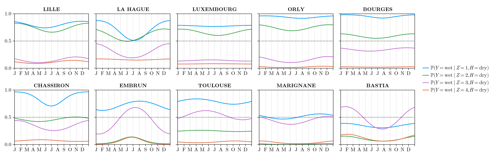
Spatial Rain probability
memory_past_cat = 11h = 1 (day before dry) or 2 (day before wet) $\mathbb{P}(Y = \text{Rain}\mid Z = k, H = h)$ with h = memory_past_cat
For now there are some scale rendering issues due to an GeoMakie.jl issue so it might be tiny.
p_FR_map_mean_prob = map_with_stations(LON_idx, LAT_idx, [[mean(succprob.(hmm_fit.B[k, :, j, memory_past_cat])) for j in 1:length(STAID)] for k in 1:K], colorbar_show=true, colorbar_label = L"\mathbb{P}(Y = \text{Rain}\mid Z = k, H = 1)", precision_scale = precision_scale)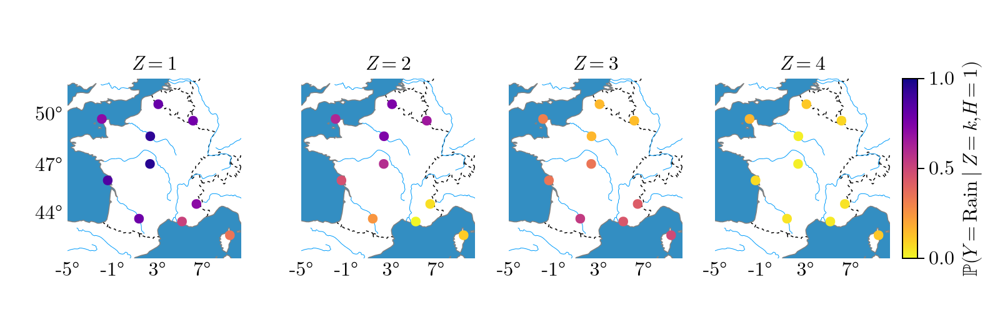
Inference of the historical hidden states
Viterbi algorithm
ẑ = viterbi(hmm_fit, Y, Y_past; n2t=n2t)
data_stations_z = map(data_stations) do df
@transform(df, :z = [fill(missing, local_order); ẑ])
end
ẑ_per_cat = [findall(ẑ .== k) for k in 1:K]4-element Vector{Vector{Int64}}:
[1, 7, 8, 12, 17, 23, 29, 44, 80, 81 … 23356, 23357, 23358, 23359, 23362, 23364, 23365, 23366, 23367, 23368]
[2, 10, 11, 14, 18, 20, 21, 22, 25, 26 … 23328, 23333, 23351, 23352, 23355, 23360, 23361, 23369, 23370, 23371]
[6, 9, 13, 15, 16, 24, 27, 30, 31, 40 … 23325, 23330, 23331, 23334, 23335, 23339, 23345, 23346, 23350, 23363]
[3, 4, 5, 19, 32, 33, 34, 38, 46, 48 … 23295, 23332, 23347, 23348, 23349, 23372, 23373, 23374, 23375, 23376]Visualization of the historical sequences of hidden states
year_range = unique(year.(data_stations[1][1+local_order:end, :DATE]));
idx_year = [findall(x -> year.(x) == m, data_stations[1][1+local_order:end, :DATE]) for m in year_range];
select_year = unique(sort([4:10:length(year_range); 21; 48; 64]))
begin
year_nb = length(select_year)
z_hat_mat = fill(NaN, 366, year_nb) # day × year, NaN on day 366 of non leap years
for (i, y) in enumerate(select_year)
z_hat_mat[eachindex(idx_year[y]), i] = ẑ[idx_year[y]]
end
pviterbi = Figure()
ax = Axis(pviterbi[1, 1], xticks=(month_days, vcat(string.(monthabbr.(1:12)), "")), yticks=(1:year_nb, string.(year_range[select_year])),
yreversed=true, xgridvisible=false, ygridvisible=false, width=850, height=450)
heatmap!(ax, 1:366, 1:year_nb, z_hat_mat, colormap=my_palette(K), colorrange=(1, K), nan_color=:white)
hlines!(ax, (1:year_nb-1) .+ 0.5, color=:black, linewidth=4)
xlims!(ax, 0.5, 366.5)
Legend(pviterbi[1, 2], [PolyElement(color=my_palette(K)[k]) for k in 1:K], [L"Z = %$k" for k in 1:K], framevisible=false)
resize_to_layout!(pviterbi)
pviterbi
end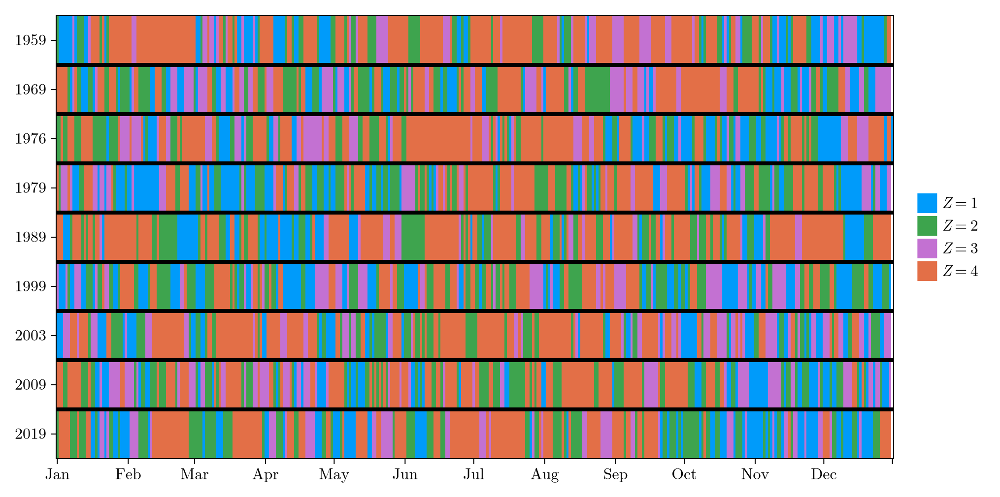
Adding Rainfall amounts to the model
Marginal distribution
We fit the marginals of the rainfall amount $R>0$ at each station $s$ and for each hidden state $Z$ independently. We use a mixture of exponential functions
\[g(r) = w \dfrac{e^{-{\frac {r}{\vartheta_1}}}}{\vartheta_1} + (1-w) \dfrac{e^{-{\frac {r}{\vartheta_2}}}}{\vartheta_2}.\]
whose parameters $w(t)$, $\vartheta_1(t)$ and $\vartheta_2(t)$ are smooth periodic functions of the day of the year.
@time "FitMLE RR" mix_allE = fit_mle_RR.(data_stations_z, local_order, mix₀=mix_ini(T); solver);FitMLE RR: 50.958704 seconds (7.91 M allocations: 2.114 GiB, 0.31% gc time, 2.07% compilation time: 1% of which was recompilation)Thanks to Distributions.jl PR #1389 (September 2nd, 2021) and Julia multiple dispatch, the quantile function of Mixtures can be very efficiently computed.
Rain correlations
We fit a Gaussian copula to each pair of stations for joint rainy days only.
For some hidden states corresponding to dry weather, it might happen that for some pair of stations, there are not enough simultaneous rain occurrences in a rain category $Z = k$ to estimate a correlation coefficient. In that case a missing coefficient is returned by cov_RR or it returns the value impute_missing if specified (to avoid missing). The option force_PosDef (enabled by default) ensures having positive definite matrix. This is necessary to use gaussian copula.
Σ²RR = cov_RR(data_stations_z, K)4-element Vector{Matrix{Float64}}:
[3879.3410237455955 643.1969973888454 … 1044.722558290334 1422.1412369837526; 643.1969973888454 3906.8065809319683 … 421.21726685970293 261.80966034462176; … ; 1044.722558290334 421.21726685970293 … 3782.5212727685685 797.3469589896836; 1422.1412369837526 261.80966034462176 … 797.3469589896836 3100.798265766617]
[2301.9313610952054 485.18478831568194 … 770.578089634074 863.0300234394579; 485.18478831568194 2006.8630718718769 … 428.13538892508905 271.6725720365548; … ; 770.578089634074 428.13538892508905 … 2440.5330122895875 592.8827865026186; 863.0300234394579 271.6725720365548 … 592.8827865026186 1893.078927735636]
[2948.5928743209097 750.2824568975376 … 621.8223025654515 827.3791552074431; 750.2824568975376 5838.066822339216 … 369.18199793741627 352.11239948672414; … ; 621.8223025654515 369.18199793741627 … 2871.8548379173185 652.5033493795553; 827.3791552074431 352.11239948672414 … 652.5033493795553 2070.968133316776]
[2578.6677735877342 939.3858870148969 … 533.7956218371148 -108.18202437342077; 939.3858870148969 3052.544041679537 … 895.829637906105 212.71744260122827; … ; 533.7956218371148 895.829637906105 … 1706.7038943029056 -415.3458619634568; -108.18202437342077 212.71744260122827 … -415.3458619634568 803.7842493374762]Simulation
Now we are ready to generate samples from the SWG model.
Nb is the number of realization. In (Gobet et al., 2025) Nb = 5_000 was used.
Nb = 1_0001000Sample the (seasonal) HMM model and output the sequence of hidden states and multi-site dry/wet.
begin
zs = zeros(Int, N, Nb)
ys = zeros(Bool, D, N, Nb)
@time "Simulations Z, Y" for i in 1:Nb
zs[:, i], ys[:, :, i] = rand(hmm_fit, n2t; Y_past, z_ini=1, seq=true)
end
endSimulations Z, Y: 28.562231 seconds (93.60 M allocations: 4.576 GiB, 3.63% gc time, 0.34% compilation time)Given the hidden states and dry/wet, it generates the rainfall amounts at each station (correlated with a Gaussian Copula).
begin
rs = zeros(D, N, Nb)
@time "Simulations RR>0" for i in 1:Nb
rs[:, :, i] = rand_RR(mix_allE, n2t, zs[:, i], ys[:, :, i], Σ²RR)
end
endSimulations RR>0: 1005.798005 seconds (1.02 G allocations: 75.416 GiB, 0.90% gc time, 0.15% compilation time)WGEN model
We will compare to the WGEN model that propose Markov chain of order 4 for rain occurrences (fitted monthly) and laten gaussian model for multisite occurrences (fitted monthly).
- Wilks, D. S. "Multisite generalization of a daily stochastic precipitation generation model". Journal of Hydrology, (1998). https://doi.org/10.1016/S0022-1694(98)00186-3.
- Srikanthan, Ratnasingham, et Geoffrey G. S. Pegram. "A nested multisite daily rainfall stochastic generation model". Journal of Hydrology 2009. https://doi.org/10.1016/j.jhydrol.2009.03.025.
wgen_order = 4
idx_months = [findall(x -> month.(x) == m, data_stations[1][1+local_order:end, :DATE]) for m in 1:12]
wgen4_model = fit_wgen(Y, idx_months, wgen_order)
ys_wgen = similar(ys)
@time "Simulation Y wgen 4" for i in 1:Nb
ys_wgen[:, :, i] = rand(wgen4_model, 1956:2019; Y_past=hcat(rand(Bool, D, wgen_order - 1), Y_past))
endSimulation Y wgen 4: 113.560778 seconds (1.90 G allocations: 66.276 GiB, 8.15% gc time, 0.83% compilation time)Results
Spell distribution
select_month to choose the month where to compute the spell distributions (summer month, winter, etc.) select_month = 1:12 corresponds to all months.
select_month = 1:12
idx_months = [findall(x -> month.(x) == m, data_stations[1][1+local_order:end, :DATE]) for m in 1:12]
idx_month_vcat = vcat(idx_months[select_month]...)
idx_all = [intersect(yea, mon) for yea in idx_year, mon in idx_months];Historic spells
len_spell_hist = [pmf_spell(Y[j, idx_month_vcat], dw) for j in 1:D, dw in 0:1];Simulation spells
len_spell_simu = [pmf_spell(ys[j, idx_month_vcat, i], dw) for i in 1:Nb, j in 1:D, dw in 0:1];Dry spell
make_range(y, step=1) = range(extrema(y)..., step=step)
legend_simu = ([PolyElement(color=:grey, alpha=0.4), PolyElement(color=:red, alpha=0.5), LineElement(color=:red), LineElement(color=:blue)],
[L"Simu $q_{0,100}$", L"Simu $q_{25,75}$", L"Simu $q_{50}$", "Obs"]) # legend of the simulation envelopes vs observations
begin
dry_or_wet = 1 # dry
pall_spell_dry = Figure()
for (idx, j) in enumerate(staid_lat)
row, col = fldmod1(idx, 5)
ax = Axis(pall_spell_dry[row, col], title=station_name[j], xlabel=(row == 2 ? "Nb of days" : ""), ylabel=(col == 1 ? "PMF" : ""),
yscale=log10, width=200, height=170)
all_spells = len_spell_simu[:, j, dry_or_wet]
histo_spell = len_spell_hist[j, dry_or_wet]
spell_range = 1:1:(1+maximum(vcat(reduce(vcat, all_spells), histo_spell)))
errorlinehist!(ax, all_spells, bins=spell_range, normalization=:probability, errortype=:percentile, percentiles=[0, 100], centertype=:median, color=:red, secondarycolor=:grey, secondaryalpha=0.4)
errorlinehist!(ax, all_spells, bins=spell_range, normalization=:probability, errortype=:percentile, percentiles=[25, 75], centertype=:median, color=:red, secondaryalpha=0.5)
errorlinehist!(ax, [histo_spell], bins=spell_range, normalization=:probability, errortype=:percentile, color=:blue, linewidth=1.5, alpha=0.8)
xlims!(ax, 0, 2 + 1.5maximum(histo_spell))
ylims!(ax, 1e-4, 1)
col > 1 && hideydecorations!(ax, grid=false, ticks=false, minorgrid=false, minorticks=false)
end
Legend(pall_spell_dry[:, 6], legend_simu..., framevisible=false)
resize_to_layout!(pall_spell_dry)
pall_spell_dry
end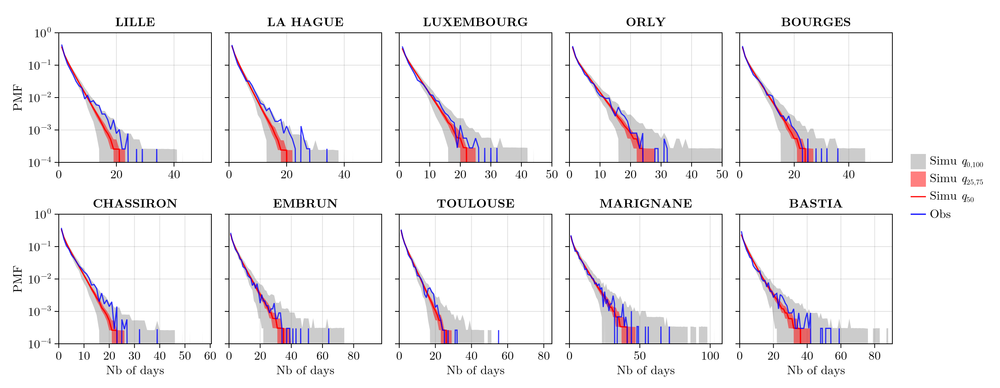
Wet spell
begin
dry_or_wet = 2 # wet
pall_spell_wet = Figure()
for (idx, j) in enumerate(staid_lat)
row, col = fldmod1(idx, 5)
ax = Axis(pall_spell_wet[row, col], title=station_name[j], xlabel=(row == 2 ? "Nb of days" : ""), ylabel=(col == 1 ? "PMF" : ""),
yscale=log10, width=200, height=170)
all_spells = len_spell_simu[:, j, dry_or_wet]
histo_spell = len_spell_hist[j, dry_or_wet]
spell_range = 1:1:(1+maximum(vcat(reduce(vcat, all_spells), histo_spell)))
errorlinehist!(ax, all_spells, bins=spell_range, normalization=:probability, errortype=:percentile, percentiles=[0, 100], centertype=:median, color=:red, secondarycolor=:grey, secondaryalpha=0.4)
errorlinehist!(ax, all_spells, bins=spell_range, normalization=:probability, errortype=:percentile, percentiles=[25, 75], centertype=:median, color=:red, secondaryalpha=0.5)
errorlinehist!(ax, [histo_spell], bins=spell_range, normalization=:probability, errortype=:percentile, color=:blue, linewidth=1.5, alpha=0.8)
xlims!(ax, 0, 2 + 1.5maximum(histo_spell))
ylims!(ax, 1e-4, 1)
col > 1 && hideydecorations!(ax, grid=false, ticks=false, minorgrid=false, minorticks=false)
end
Legend(pall_spell_wet[:, 6], legend_simu..., framevisible=false)
resize_to_layout!(pall_spell_wet)
pall_spell_wet
end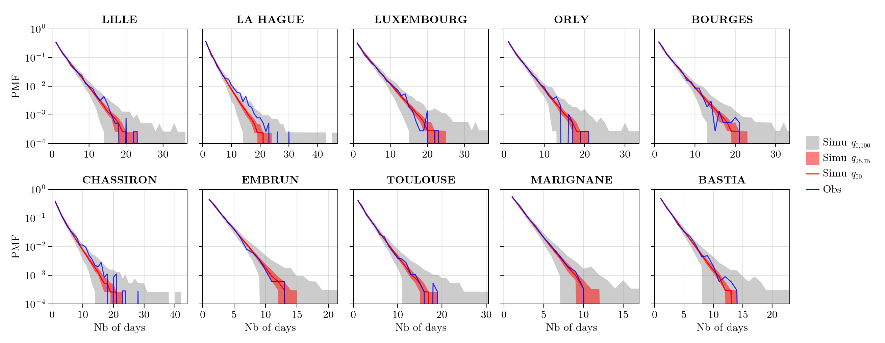
Seasonal areal dry spells
RRmax = 0
ROR = [mean(r .> RRmax) for r in eachcol(RR)]
RORs = [[mean(r .> RRmax) for r in eachcol(rr)] for rr in eachslice(ys, dims=3)]
RORswgen = [[mean(r .> RRmax) for r in eachcol(rr)] for rr in eachslice(ys_wgen, dims=3)]
JJA = [6, 7, 8]
MAM = [3, 4, 5]
SON = [9, 10, 11]
DJF = [12, 1, 2]
SEASONS = [DJF, MAM, JJA, SON]
seasonname = ["DJF", "MAM", "JJA", "SON"]
idx_seasons = [findall(month.(data_stations[1][1+local_order:end, :DATE]) .∈ tuple(season)) for season in SEASONS]
pall_ROR = let
perc = 0.2
QQ = [5, 95]
fig = Figure()
for m in eachindex(idx_seasons)
row, col = fldmod1(m, 2)
ax = Axis(fig[row, col], title=seasonname[m], xlabel=(row == 2 ? "Nb of days" : ""), ylabel=(col == 1 ? "PMF" : ""),
yscale=log10, limits=(-0.01, 25, 5e-4, 1), width=350, height=200)
len_ror_hist = pmf_spell(ROR[idx_seasons[m]] .≤ perc, 1)
len_ror_simu = [pmf_spell(RORs[i][idx_seasons[m]] .≤ perc, 1) for i in 1:Nb]
len_ror_simuwgen = [pmf_spell(RORswgen[i][idx_seasons[m]] .≤ perc, 1) for i in 1:Nb]
errorlinehist!(ax, len_ror_simuwgen, bins=make_range(reduce(vcat, len_ror_simuwgen)), normalization=:probability, errortype=:percentile, percentiles=QQ,
centertype=:median, color=:green, secondaryalpha=0.25, linewidth=2, label="WGEN 4")
errorlinehist!(ax, len_ror_simu, bins=make_range(reduce(vcat, len_ror_simu)), normalization=:probability, errortype=:percentile, percentiles=QQ,
centertype=:median, color=:grey, secondaryalpha=0.3, linewidth=2, label="SHHMM")
errorlinehist!(ax, [len_ror_hist], bins=make_range(len_ror_hist), normalization=:probability, errortype=:percentile, color=:blue, linewidth=2, label="Obs")
col > 1 && hideydecorations!(ax, grid=false, ticks=false, minorgrid=false, minorticks=false)
end
Legend(fig[:, 3], content(fig[1, 1]), framevisible=false)
resize_to_layout!(fig)
fig
end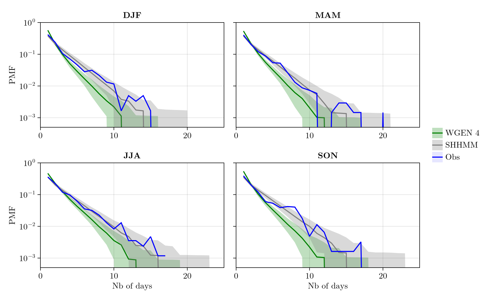
Rain
Interpretation: Mean Rain per weather regime $R > 0 \mid Z = k$.
We plot the empirical (strictly) positive mean rainfall amounts per weather regime. The results are smoothed using a cyclic_moving_average with a time window of $\pm 15$ days and the Epanechnikov kernel.
function cyclic_moving_average(A::AbstractVector, t::AbstractVector, T::Integer, window::Integer)
a = zeros(T) # values at times 1:T, zero where nothing is observed
a[t] .= A
shifts = -window:window
weights = [3 / 4 * (1 - (i / (2window + 1))^2) for i in shifts] # Epanechnikov kernel
return [sum(a[mod1(s + i, T)] * w for (i, w) in zip(shifts, weights)) for s in 1:T] / sum(weights)
end
begin
plt_rain_cat_mix = Figure()
for (idx, j) in enumerate(staid_lat)
row, col = fldmod1(idx, 5)
ax = Axis(plt_rain_cat_mix[row, col], title=station_name[j], ylabel=(col == 1 ? "Rain (mm)" : ""), xticks=(month_days, month_letters),
width=230, height=170)
df_j = @chain data_stations_z[j] begin
dropmissing
@transform(:day = dayofyear_Leap.(:DATE))
@subset(:RR .> 0)
@by([:day, :z], :MEAN_RR = mean(:RR))
groupby(:z)
end
# Uncomment to see how the double exponential mixtures compare to the empirical data.
# [lines!(ax, 1:T, [conversion_factor * mean(mix_allE[j][k, t]) for t in 1:T], color=my_palette(K)[k], linestyle=:dash) for k in 1:K]
for k in 1:K
cycle_avg = replace(cyclic_moving_average(df_j[(z=k,)].MEAN_RR, df_j[(z=k,)].day, T, 15), 0 => NaN)
lines!(ax, 1:T, conversion_factor * cycle_avg, color=my_palette(K)[k], linewidth=1.5)
end
xlims!(ax, 0, 367)
ylims!(ax, 0, nothing)
end
Legend(plt_rain_cat_mix[:, 6], [LineElement(color=my_palette(K)[k], linewidth=1.5) for k in 1:K], [L"Z = %$k" for k in 1:K], framevisible=false)
resize_to_layout!(plt_rain_cat_mix)
plt_rain_cat_mix
end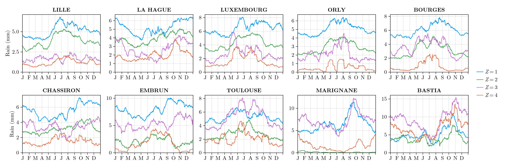
Univariate Rain distributions
Historical vs Nb simulations distribution
begin
pall_R = Figure()
for (idx, j) in enumerate(staid_lat)
row, col = fldmod1(idx, 5)
ax = Axis(pall_R[row, col], title=station_name[j], xlabel=(row == 2 ? "Rain (mm)" : ""), ylabel=(col == 1 ? "PDF" : ""),
yscale=log10, width=200, height=170)
dists_RR_positive_j = conversion_factor * [filter(!iszero, rs[j, :, i]) for i in 1:Nb]
RR_positive_j = conversion_factor * filter(!iszero, data_stations[j].RR)
Rmax = ceil(max(dists_RR_positive_j .|> maximum |> maximum, RR_positive_j |> maximum))
BINS = 0:2:Rmax # fixing the bins is very important to ensure fair comparison. Note that changing the bin step changes the aspect of the distributions.
errorlinehist!(ax, dists_RR_positive_j, bins=BINS, normalization=:pdf, errortype=:percentile, percentiles=[0, 100], centertype=:median, color=:red, secondarycolor=:grey, secondaryalpha=0.4)
errorlinehist!(ax, dists_RR_positive_j, bins=BINS, normalization=:pdf, errortype=:percentile, percentiles=[25, 75], centertype=:median, color=:red, secondaryalpha=0.5)
errorlinehist!(ax, [RR_positive_j], bins=BINS, normalization=:pdf, errortype=:percentile, color=:blue, linewidth=1.5, alpha=0.7)
xlims!(ax, 0, nothing)
ylims!(ax, 0.2e-4, 1)
col > 1 && hideydecorations!(ax, grid=false, ticks=false, minorgrid=false, minorticks=false)
end
Legend(pall_R[:, 6], legend_simu..., framevisible=false)
resize_to_layout!(pall_R)
pall_R
end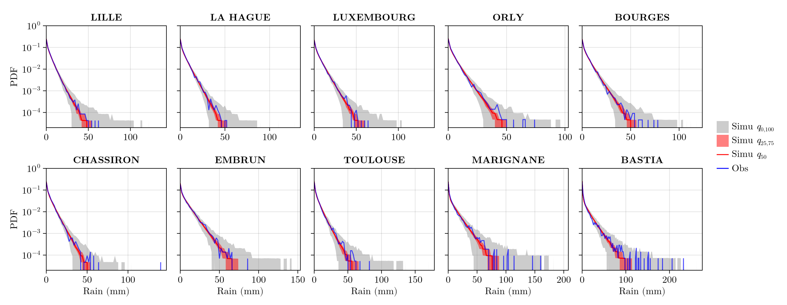
Aggregated 5 days RR distribution
agg_window = 5
df_res = [
@chain df[1+local_order:end, :] begin
@transform(:agg = first.(divrem.(1:N, agg_window)))
@by(:agg, :AGG = sum(:RR) * 0.1)
end
for df in data_stations_z
]
agg_i_full = first.(divrem.(1:N, agg_window))
idx_agg = [findall(agg_i_full .== val) for val in unique((agg_i_full))]
agg_rs = [[sum(rs[j, ii, i]) for ii in idx_agg] for j in 1:D, i in 1:Nb] * conversion_factor
agg_RR = [[sum(RR[j, ii]) for ii in idx_agg] for j in 1:D]
begin
pall_aggR = Figure()
for (idx, j) in enumerate(staid_lat)
row, col = fldmod1(idx, 5)
ax = Axis(pall_aggR[row, col], title=station_name[j], xlabel=(row == 2 ? "$(agg_window) days rain (mm)" : ""), ylabel=(col == 1 ? "PDF" : ""),
yscale=log10, yticks=LogTicks(-5:-1), width=200, height=170)
ax_zoom = Axis(pall_aggR[row, col], width=Relative(0.5), height=Relative(0.35), halign=0.95, valign=0.95, limits=(0, 25, 0, 0.2),
xticks=[0, 10, 20], yticks=[0, 0.1, 0.2], xticklabelsize=10, yticklabelsize=10) # zoom on small amounts, linear scale
Rmax = ceil(max(agg_rs[j, :] .|> maximum |> maximum, agg_RR[j] |> maximum))
for a in (ax, ax_zoom)
errorlinehist!(a, agg_rs[j, :], bins=0:3:Rmax, normalization=:pdf, errortype=:percentile, percentiles=[0, 100], centertype=:median, color=:red, secondarycolor=:grey, secondaryalpha=0.4)
errorlinehist!(a, agg_rs[j, :], bins=0:3:Rmax, normalization=:pdf, errortype=:percentile, percentiles=[25, 75], centertype=:median, color=:red, secondaryalpha=0.5)
errorlinehist!(a, [agg_RR[j]], bins=0:3:Rmax, normalization=:pdf, errortype=:percentile, color=:blue, linewidth=1.5)
end
xlims!(ax, 0, nothing)
ylims!(ax, 3e-5, 2e-1)
col > 1 && hideydecorations!(ax, grid=false, ticks=false, minorgrid=false, minorticks=false)
end
Legend(pall_aggR[:, 6], legend_simu..., framevisible=false)
resize_to_layout!(pall_aggR)
pall_aggR
end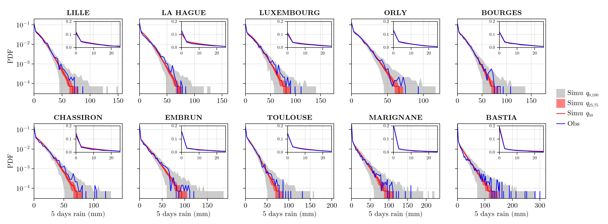
Autocorrelation
acfrange = 0:15
@views aa = [autocor(rs[j, :, i], acfrange) for j in 1:D, i in 1:Nb]
begin
pall_ACF = Figure()
for (idx, j) in enumerate(staid_lat)
row, col = fldmod1(idx, 5)
ax = Axis(pall_ACF[row, col], title=station_name[j], xlabel=(row == 2 ? "Lag" : ""), ylabel=(col == 1 ? "ACF" : ""), width=200, height=170)
errorline!(ax, acfrange, stack(aa[j, :], dims=1)', errortype=:percentile, percentiles=[0, 100], centertype=:median, color=:gray, secondaryalpha=0.4, linewidth=2)
scatterlines!(ax, acfrange, autocor(RR[j, :], acfrange), color=:blue, linewidth=2, markersize=7)
end
Legend(pall_ACF[:, 6], [[PolyElement(color=:gray, alpha=0.4), LineElement(color=:gray, linewidth=2)], [LineElement(color=:blue, linewidth=2), MarkerElement(color=:blue, marker=:circle)]],
[L"Simu $q_{0,100}$", "Obs"], framevisible=false)
resize_to_layout!(pall_ACF)
pall_ACF
end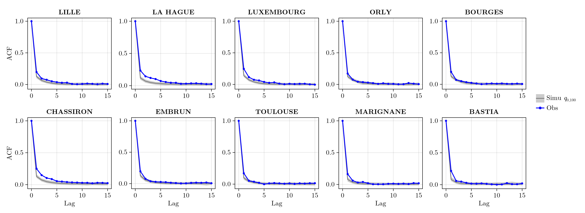
Monthly quantile amount
rh = stack([df[1+local_order:end, :RR] for df in data_stations]; dims=1) # D × N
month_rain_simu = [monthly_agg(rs[j, :, i], idx_all) for j in 1:D, i in 1:Nb];
month_rain_histo = [monthly_agg(rh[j, :], idx_all) for j in 1:D]
qs = [0.9, 0.5, 0.1]
quantile_colors = plots_colors[[1, 3, 2]] # for qs = [0.9, 0.5, 0.1]
quantile_band_legend(color) = [PolyElement(color=color, alpha=0.18), PolyElement(color=color, alpha=0.72, points=Point2f[(0, 1 / 3), (1, 1 / 3), (1, 2 / 3), (0, 2 / 3)]), LineElement(color=color)]
@time "Plot monthly quantile" begin
pall_month_RR = Figure()
for (idx, j) in enumerate(staid_lat)
row, col = fldmod1(idx, 5)
ax = Axis(pall_month_RR[row, col], title=station_name[j], ylabel=(col == 1 ? "Rain (mm)" : ""), xticks=(1:12, string.(first.(monthabbr.(1:12)))),
width=230, height=170)
for (α, per) in enumerate([[0, 100], [25, 75]])
for (cc, q) in enumerate(qs)
errorline!(ax, 1:12, [quantile(month_rain_simu[j, i][:, m], q) * conversion_factor for m in 1:12, i in 1:Nb], secondaryalpha=0.18 * α^2, centertype=:median, errortype=:percentile, percentiles=per, color=quantile_colors[cc])
end
end
for q in qs
scatterlines!(ax, 1:12, [quantile(month_rain_histo[j][:, m], q) * conversion_factor for m in 1:12], color=:blue, linewidth=1.75, markersize=7)
end
ylims!(ax, 0, nothing)
end
Legend(pall_month_RR[:, 6], [quantile_band_legend.(quantile_colors)..., [LineElement(color=:blue), MarkerElement(color=:blue, marker=:circle, markersize=7)]],
[[L"Simu $q_{%$(Int(q*100))}$" for q in qs]..., "Obs"], framevisible=false)
resize_to_layout!(pall_month_RR)
pall_month_RR
end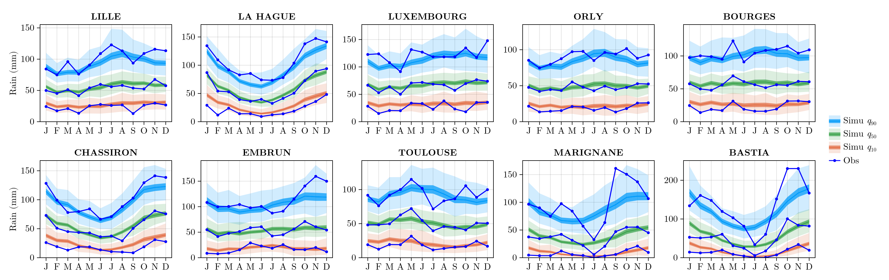
Correlations
Rain event dry/wet
cor_bin_hist = cor(stack([df.RO for df in data_stations]; dims=1), dims=2);
cor_bin_mean_simu = mean(cor(ys[:, :, i], dims=2) for i in 1:Nb);
begin
plot_cor_bin = Figure()
ax = Axis(plot_cor_bin[1, 1], xlabel="Observations", ylabel="Simulations", limits=(-0.1, 1, -0.1, 1), aspect=DataAspect(), width=350, height=350)
ablines!(ax, 0, 1, color=:black)
scatter!(ax, vec_triu(cor_bin_hist), vec_triu(cor_bin_mean_simu), color=plots_colors[2], label="Correlations")
text!(ax, 0.2, 0.7, text=L"\mathrm{MSE} \simeq %$(round(mean(abs2, vec_triu(cor_bin_hist) - vec_triu(cor_bin_mean_simu)), digits = 4))")
axislegend(ax, position=:rb)
resize_to_layout!(plot_cor_bin)
plot_cor_bin
end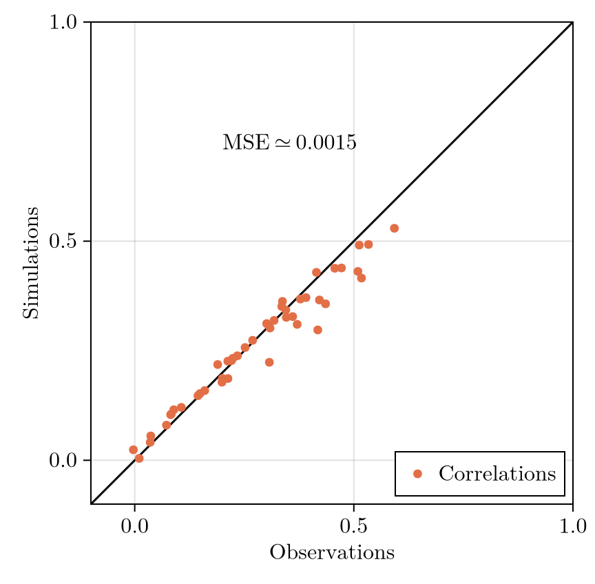
The largest pair correlation error for rain occurrence comes from the pair
println("$(station_name[findmax(cor_bin_hist - cor_bin_mean_simu)[2][1]]) and $(station_name[findmax(cor_bin_hist - cor_bin_mean_simu)[2][2]])")CHASSIRON and LA HAGUERainfall amount
cor_hist = cor(stack([df.RR for df in data_stations]; dims=1), dims=2);
corT_hist = corTail(stack([df.RR for df in data_stations]; dims=1), dims=2);
cor_mean_simu = mean(cor(rs[:, :, i], dims=2) for i in 1:Nb);
corT_mean_simu = mean(corTail(rs[:, :, i], dims=2) for i in 1:Nb);
begin
plot_cor_all = Figure()
for (i, (obs, simu, name)) in enumerate([(cor_hist, cor_mean_simu, "Correlations"), (corT_hist, corT_mean_simu, "Tail index")])
ax = Axis(plot_cor_all[1, i], xlabel="Observations", ylabel=(i == 1 ? "Simulations" : ""), limits=(-0.1, 1, -0.1, 1), aspect=DataAspect(), width=300, height=300)
ablines!(ax, 0, 1, color=:black)
scatter!(ax, vec_triu(obs), vec_triu(simu), color=plots_colors[i+1], label=name)
text!(ax, 0.3, 0.7, text=L"\mathrm{MSE} \simeq %$(round(mean(abs2, vec_triu(obs) - vec_triu(simu)), digits = 4))")
axislegend(ax, position=:rb)
end
resize_to_layout!(plot_cor_all)
plot_cor_all
end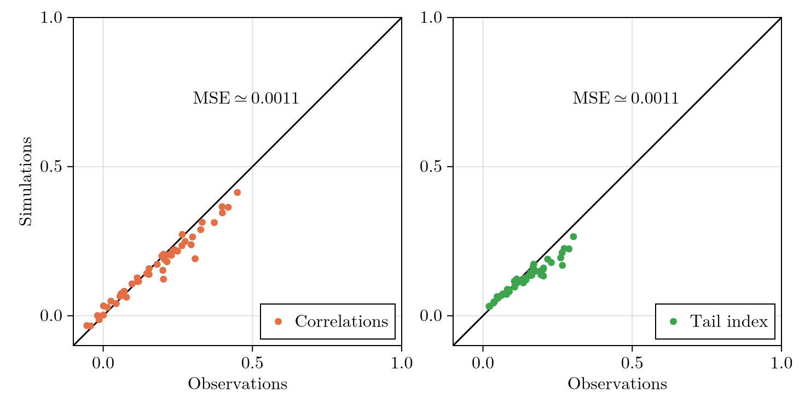
The largest pair correlation error for rain (zero and non zero amounts) comes from the pair
println("$(station_name[findmax(cor_hist - cor_mean_simu)[2][1]]) and $(station_name[findmax(cor_hist - cor_mean_simu)[2][2]])")EMBRUN and MARIGNANEGaussian copula hypothesis
For a pair of stations, we transform the marginal $R_s>0$ to $\mathcal{N}(0,1)$. We compare the obtained bi-variate Normal distribution with the Mahalanobis distance to the theoretical $\chi^2(2)$-distriubtion.
corΣ = cov2cor.(Σ²RR)
begin
j1 = 10
j2 = 8
plt_qqp_copula = Figure()
ax = Axis(plt_qqp_copula[1, 1], xlabel=L"$\chi^2(2)$-quantile", ylabel="Observed squared Mahalanobis distance",
title="$(station_name[j1])-$(station_name[j2]) $(ifelse(j1 == 10 && j2 == 8, "(334 km)", ""))", limits=(0, 22, 0, 22), aspect=DataAspect(), width=400, height=400)
ablines!(ax, 0, 1, color=:black)
df_12 = leftjoin(data_stations_z[j1], data_stations_z[j2], on=:DATE, makeunique=true)
@subset!(df_12, :RR .> 0, :RR_1 .> 0)
for k in 1:K
df_X = @chain df_12 begin
@subset(:z .== k)
dropmissing
@aside u = StochasticWeatherGenerators.Copulas.pseudos(permutedims(hcat(_.RR, _.RR_1)))
@transform(:X = quantile(Normal(), u[1,:]), :X_1 = quantile(Normal(), u[2,:]))
end
X = stack([df_X.X, df_X.X_1]; dims=1) # 2 × n
cor_sigma = [1 corΣ[k][j1,j2]; corΣ[k][j1,j2] 1]
Σ⁻¹ = inv(cor_sigma)
X2 = [(x' * Σ⁻¹ * x) for x in eachcol(X)] |> sort
ecdfX2 = ecdf(X2)(X2) * length(X2) / (length(X2) + 1)
lines!(ax, quantile(Chisq(2), ecdfX2), X2, color=my_palette(K)[k], linewidth=2, label=L"Z = %$k")
end
axislegend(ax, position=:lt)
resize_to_layout!(plt_qqp_copula)
plt_qqp_copula
end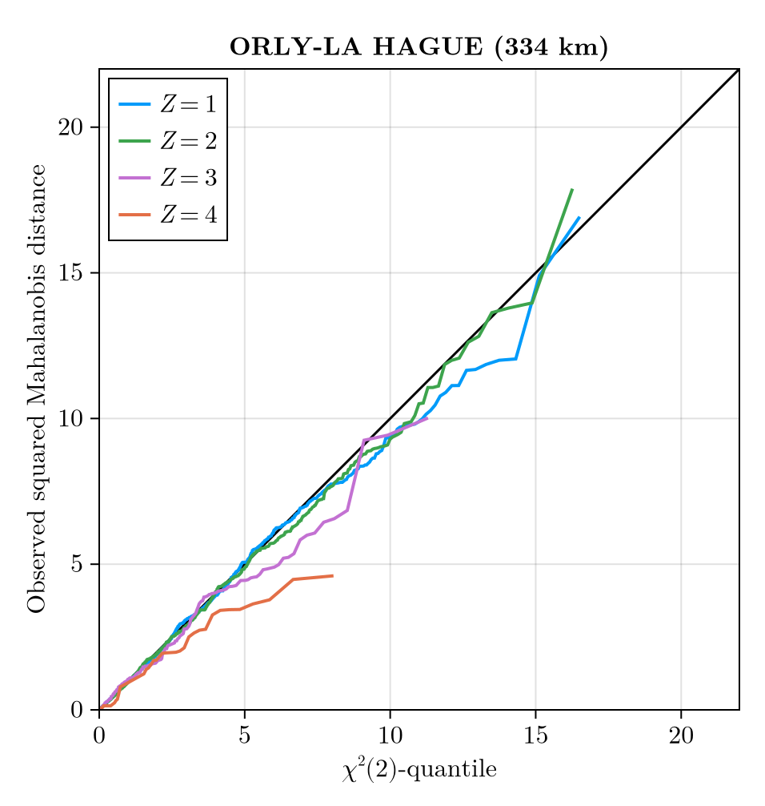
Reproducibility
using InteractiveUtils
InteractiveUtils.versioninfo()Julia Version 1.13.4
Commit c1ac32ab733 (2026-11-13 17:30 UTC)
Build Info:
Official https://julialang.org release
Platform Info:
OS: Linux (x86_64-linux-gnu)
CPU: 4 × AMD EPYC 7763 64-Core Processor
WORD_SIZE: 64
LLVM: libLLVM-20.1.8 (ORCJIT, znver3)
GC: Built with stock GC
Threads: 4 default, 1 interactive, 4 GC (on 4 virtual cores)
Environment:
JULIA_DEBUG = DocumenterPackage list and version
import Pkg; Pkg.status()Status `~/work/StochasticWeatherGenerators.jl/StochasticWeatherGenerators.jl/docs/Project.toml`
⌃ [336ed68f] CSV v0.10.17
[13f3f980] CairoMakie v0.15.17
[a93c6f00] DataFrames v1.8.3
[1313f7d8] DataFramesMeta v0.15.7
[8bb1440f] DelimitedFiles v1.9.1
⌃ [31c24e10] Distributions v0.25.134
[e30172f5] Documenter v1.20.0
[daee34ce] DocumenterCitations v1.5.0
[f6369f11] ForwardDiff v1.5.0
[db073c08] GeoMakie v0.7.18
[4138dd39] JLD v0.13.5
[b964fa9f] LaTeXStrings v1.4.1
[d3d80556] LineSearches v7.8.2
[98b081ad] Literate v2.21.1
[436b0209] NaturalEarth v0.1.1
[7f7a1694] Optimization v5.9.1
[36348300] OptimizationOptimJL v0.4.23
[bac558e1] OrderedCollections v2.0.3
[727e6d20] SimpleNonlinearSolve v2.14.6
[3d8e1505] SmoothPeriodicStatsModels v4.1.0
[2913bbd2] StatsBase v0.34.14
[3eadb0b9] StochasticWeatherGenerators v1.4.0 `.`
[fd094767] Suppressor v0.2.8
[ade2ca70] Dates v1.11.0
[b77e0a4c] InteractiveUtils v1.11.0
[9a3f8284] Random v1.11.0
Info Packages marked with ⌃ have new versions available and may be upgradable.This page was generated using Literate.jl.